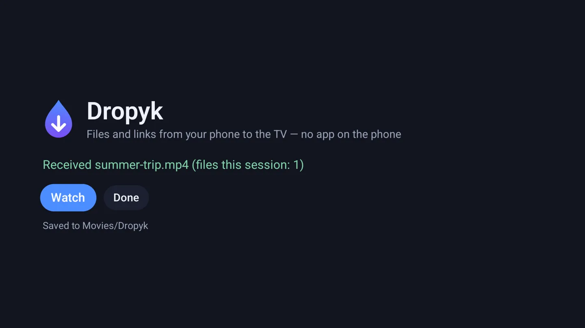

For Android TV and Google TV
From your phone to the TV in one scan.
Open Dropyk on the TV, point your phone's camera at the code and pick files. Videos, photos, APKs and links go straight over your home Wi‑Fi — no app on the phone, no cloud, no account.
- Android 7.0+
- ~1 MB
- GPL-3.0
- No account
- No cloud


How it works
Three steps, one remote.
-
1. Scan
Open Dropyk on the TV. The code leads your phone to a page the TV serves itself. Bookmark it — it keeps working.
-

2. Send
Pick one file or a hundred. They go one by one, straight to the TV's storage — a 4 GB film never passes through its memory.
-

3. Press OK
The TV offers what to do: a video plays, an APK installs, a photo shows on screen, a link opens.
Where files go
Your choice, on the phone.
Downloads
Everything in Download/Dropyk. Any file manager finds it.
By type
Videos in Movies/Dropyk, photos in Pictures/Dropyk, music in Music/Dropyk — where players and galleries look first.
Nothing leaves your home.
- Files go from the phone to the TV over your own network. No server in between, nothing uploaded anywhere.
- The page address carries a secret key, so only someone who saw the code can send.
- The TV listens only while Dropyk is open. No account, no ads, no tracking.
Coming next
One drop point, from anything.
Today you send from any phone or laptop with a browser. Planned: the TV in the Quick Share menu of Android phones, sending from a Mac with Dropyk for Mac, and a share-sheet shortcut for iPhone.
Install
- Download dropyk.apk.
- Get it onto the TV: the Downloader app, a USB stick, or
adb install dropyk.apk. - Allow installing from that source when the TV asks, then open Dropyk from the app list.
Support Dropyk.
Dropyk is free and will stay free. If it saved you a cable or a cloud upload, a coffee helps.